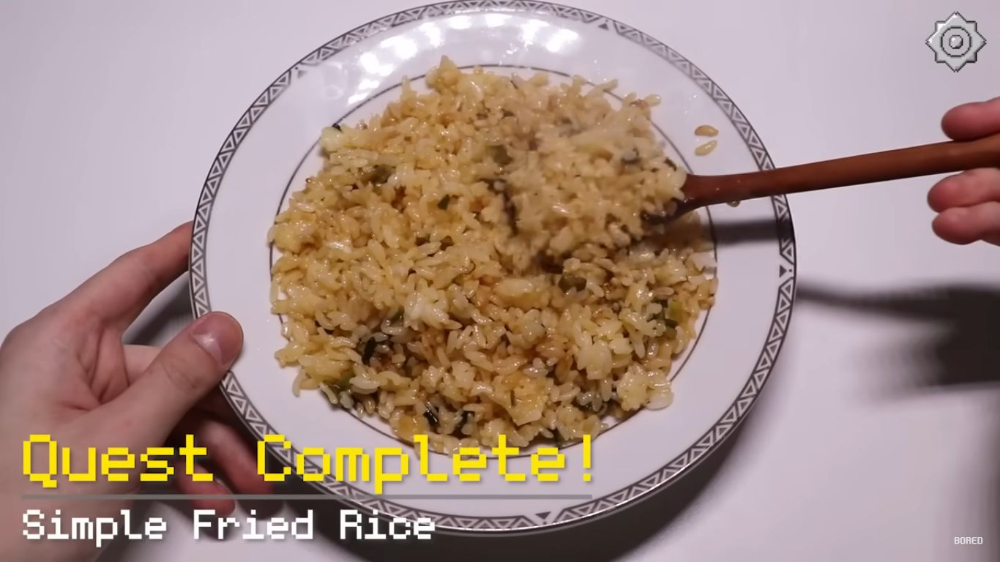

Simple Egged-Fried Rice

Description
This is a simple egg-fried rice recipe from a youtube channel named BORED. You can make a simple and delicious fried rice dish with cheap and simple ingredients in no time. Doesn't require any fancy expensive cooking equipment that only exists in the arsenal of a five-star chef like many other cooking channels. The recipes are simple. The instructions are simple and the resulting dish is simply delicious.
Ingredients
- One Bowl of Rice
- Two Eggs
- 3 Scallions
- Salt and Pepper
- Cooking Oil
- Soy Sauce
Steps
- Chop the scallions into small pieces.
- Crack the eggs and separate the yolk from the white. Separating the yolk is to make it more visually appetizing. It also concentrates the yolk flavor.
- Pour the egg yolk into the bowl of rice.
- Sprinkle a bit of salt and pepper on the rice.
- Pour the cooking oil into the bowl of rice enough to cover all the rice on the surface and mix them.
- Cook the chopped scallions on low heat with cooking oil.
- Add the soy sauce to the scallions to give it a kinda burnt effect. But be careful not to overcook and burn it too much.
- Pour the rice from the bowl into the scallions. Turn the heat up to medium or high and mix them until it's done.